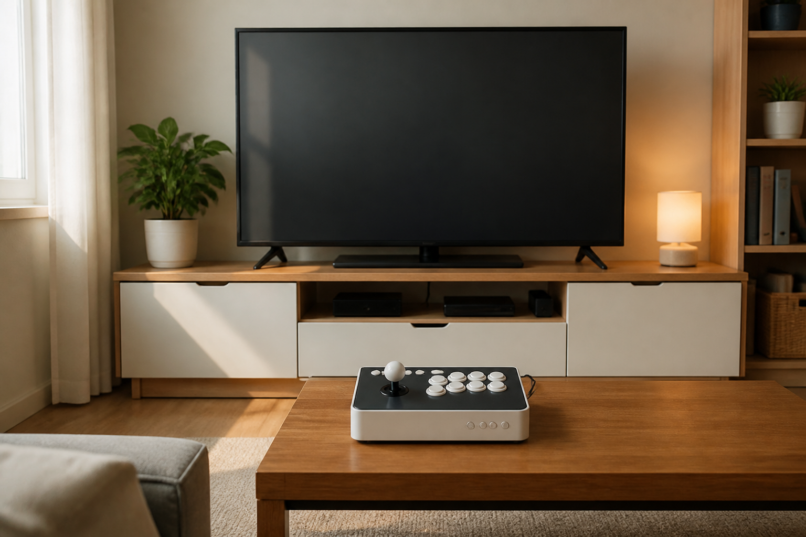
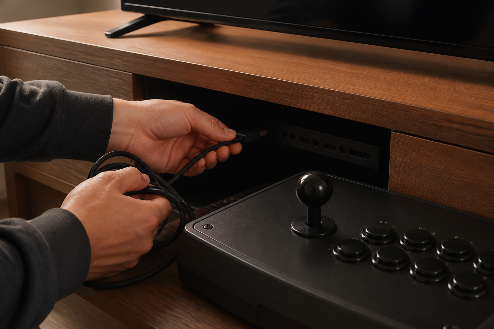
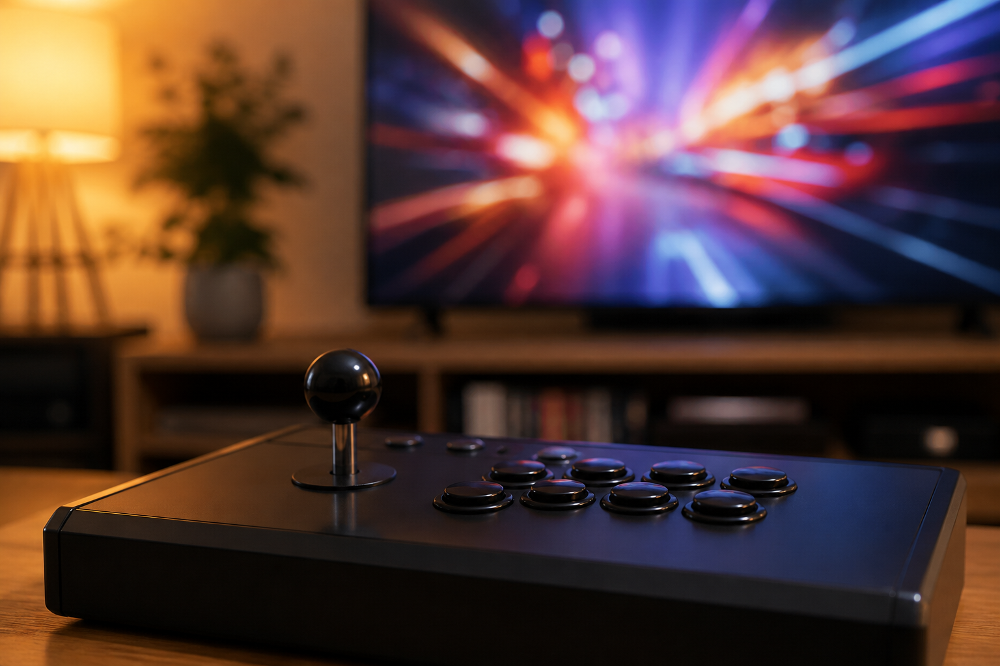

TV 연결형 오락기는 제품 안내에 맞는 TV와 연결 단자를 먼저 확인하고, 케이블을 연결한 뒤 화면과 조작이 정상인지 차례로 점검하면 됩니다. 제품마다 포함 구성과 연결 방법이 다를 수 있으므로, 구체적인 순서는 해당 판매 페이지의 안내를 우선하세요.

설치 전 제품 안내와 자리를 확인하세요
먼저 제품을 놓을 자리와 TV 주변의 연결 공간을 확인하세요. 노리박스 제품 목록에는 ‘노리박스 분리형 레트로 가정용 오락실게임기 TV연결 휴대용’처럼 TV 연결을 안내한 제품이 있습니다. 다만 제품명만으로 케이블 종류나 모든 구성품을 판단하지 말고, 실제 구매하려는 상품 페이지의 안내를 함께 살펴보는 편이 좋습니다.
TV 연결형 오락기는 제품별 판매 페이지의 연결 안내가 가장 정확한 기준입니다.
전원이 꺼진 상태에서 연결을 시작하세요
연결 전에 TV와 오락기의 전원이 꺼져 있는지 확인하고, 판매 페이지에 안내된 연결 방법을 따라 케이블을 연결하세요. TV에는 여러 입력 단자가 있을 수 있으므로 어떤 입력을 사용할지 미리 살펴두면 설치 뒤 확인할 항목을 줄일 수 있습니다. 포함 구성이나 필요한 별도 장비가 불분명하면 임의로 연결하기보다 판매자에게 먼저 문의하세요.
전원이 꺼진 상태에서 제품 안내에 맞춰 연결하면 확인 순서를 정리하기 쉽습니다.

화면이 보이는지부터 차례로 점검하세요
연결을 마친 뒤 TV를 켜고, 연결한 단자에 맞는 입력 화면을 선택해 보세요. 화면이 보이면 게임 실행과 조이스틱·버튼 조작을 하나씩 확인하고, 원하는 게임의 수록 여부도 상품 안내를 기준으로 다시 살펴보세요. 노리박스는 제품을 준비할 때 직접 게임을 실행하고 조이스틱과 버튼을 만져보며 사용 과정의 불편을 확인합니다.
화면 확인 뒤에는 게임 실행과 조작을 하나씩 점검하는 편이 좋습니다.

화면이 나오지 않으면 연결 정보를 정리하세요
화면이 보이지 않거나 조작이 예상과 다르면 TV 입력 선택, 케이블 연결 상태, 제품 전원 상태를 차례로 확인해 보세요. 해결되지 않으면 제품명과 연결한 TV 입력, 화면에 보이는 내용을 정리해 판매자에게 문의하면 상황을 설명하기 쉽습니다. 기본 준비 기준은 집에서 오락실 게임기를 시작하는 방법과 구매 전 게임 목록 확인법에서도 이어서 볼 수 있습니다.
연결 상태를 기록해 문의하면 제품별 안내를 받기 쉬워집니다.
현재 TV 연결형을 포함한 노리박스 제품과 판매 페이지는 제품자세히보기에서 확인하세요.